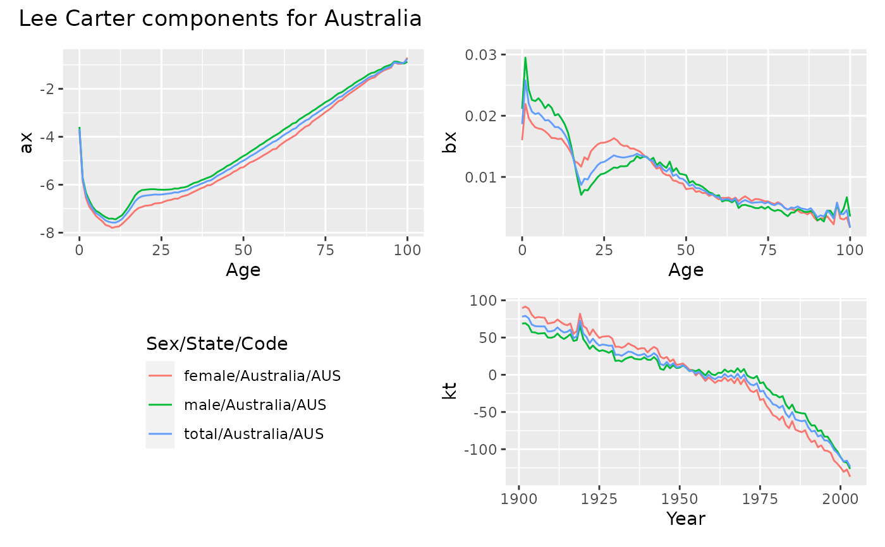

lee_carter.RdLee-Carter model of mortality or fertility rates. lee_carter produces a
standard Lee-Carter model by default, although many other options are
available. Missing rates are set to the geometric mean rate for the relevant age.
A tsibble including an age variable and a variable containing mortality or fertility rates.
Variable in `.data` containing start year of age intervals. If omitted, the variable with name `Age` or `Age_group` will be used (not case sensitive).
Optional variable in `.data` containing sex information. If omitted, the variable with name `Sex` or `Group` will be used (not case sensitive).
Variable in `.data` containing mortality or fertility rates. If omitted, it will search for a variable with one of the following names: `mx`, `mortality`, `fx`, `fertility` or `rate` (not case sensitive).
Variable in `.data` containing population numbers. If omitted, it will search for a variable with one of the following names: `pop`, `population`, `ex`, `exposure`.
method to use for adjustment of coefficients \(k_t kt\). Possibilities are “dt” (Lee-Carter method, the default), “dxt” (BMS method), “e0” (Lee-Miller method based on life expectancy) and “none”.
method to use to control "jump-off" error. The original Lee-Carter method used 'fit', but Lee and Miller (2001) and most other authors prefer 'actual' (the default).
If TRUE, bx and kt are rescaled so that kt has drift parameter = 1.
A list containing various model objects.
Lee, R D, and Carter, L R (1992) Modeling and forecasting US mortality. Journal of the American Statistical Association, 87, 659-671.
Lee R D, and Miller T (2001). Evaluating the performance of the Lee-Carter method for forecasting mortality. Demography, 38(4), 537–549.
Basellini, U, Camarda, C G, and Booth, H (2022) Thirty years on: A review of the Lee-Carter method for forecasting mortality. International Journal of Forecasting, to appear.
# Compute Lee-Carter model for Australian females, males and total
aus_lca <- aus_mortality |>
dplyr::filter(Code == "AUS") |>
lee_carter()
aus_lca
#> Lee-Carter model
#>
#> Fit:
#> # A tibble: 3 × 5
#> Sex State Code varprop adjust
#> <chr> <chr> <chr> <dbl> <chr>
#> 1 female Australia AUS 0.941 dt
#> 2 male Australia AUS 0.888 dt
#> 3 total Australia AUS 0.935 dt
autoplot(aus_lca, "Lee Carter components for Australia")
